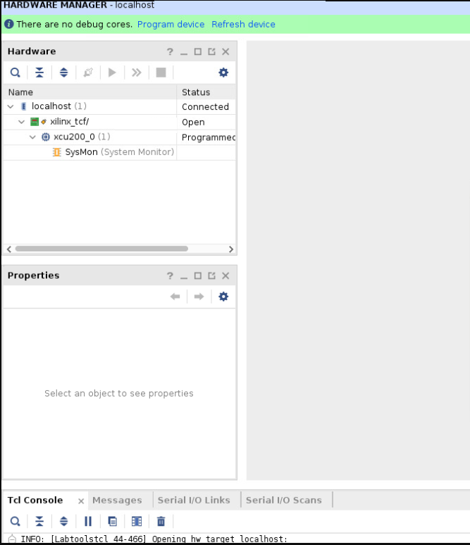

Alveo Debug Guide |
Common Steps¶
This page provides sets of techniques, used by other pages in the debug guide, which can help facilitate debugging. It is not intended to be used stand alone. If you are just starting to debug please consult the main page to determine the best starting point for your needs.
This Page Covers¶
This page covers instructions for common debug steps over the following three sections:
| Section | Items Covered |
|---|---|
| System Steps | Host hardware, BIOS, and OS setup |
| XRT Steps | XRT installation and operation |
| Card Steps | Card programming and operation |
System Steps¶
This section covers steps involving the host hardware, BIOS, and OS setup.
Log machine state¶
Use WTSxrtLog.sh to collect information on the system, XRT, and card state. The script captures:
Initial dmesg state
OS
lscpi state
System information with dmidecode and BIOS settings
XRT state
Determine which cards validate
dmesg state after XRT commands
This information is used to provide reference information while debugging.
Root sudo access¶
For certain actions, root/sudo privileges are required. Determine root/sudo privileges using the whoami and or sudo whoami commands:
whoami will tell you who the user is
:~> whoami
root
If the response is root, you have the needed permissions. Otherwise try
:~> sudo whoami
root
root indicates your account has sudo access. If you do not have the needed permissions speak with your sys-admin
Host machine and hypervisor information¶
To display host machine information and determine if a VM environment is being used, run the following linux dmidecode command
sudo dmidecode | less
It will display:
Serial Number
Model
BIOS version
As of 2020.2 XRT has support for the KVM hypervisor and virtual machines. The dmidecode output has enough information to confirm if XRT is running on a physical machine vs a virtual machine using the manufacturer and product name lines in the beginning of the report. You can also use this information to determine if the machine is a workstation or a server, with a web search.
A physical machine will report the manufacturer and model of the hardware. Common manufacturers include Dell, HP, SuperMicro and IBM. An example of this output, for a Dell server, is displayed below.
Handle 0x0100, DMI type 1, 27 bytes
System Information
Manufacturer: Dell Inc.
Product Name: PowerEdge R730
Version: Not Specified
Serial Number: xxxxxx
An example of the BIOS version found is displayed below. The BIOS displayed is version 2.8.0 in this case.
Handle 0x0000, DMI type 0, 24 bytes
BIOS Information
Vendor: Dell Inc.
Version: 2.8.0
A virtual machine does not list a specific product model. The manufacturer also changes to the VM provider (normally a software company) as displayed below:
Handle 0x0100, DMI type 1, 27 bytes
System Information
Manufacturer: QEMU
Product Name: Standard PC (Q35 + ICH9, 2009)
Common VM manufacturers include QEMU, Xen, VMware, VirtualBox/Oracle, OpenStack, KVM. Only KVM is supported - see https://developer.xilinx.com/en/articles/using-alveo-data-center-accelerator-cards-in-a-kvm-environment.html for setup details.
Determine Linux release¶
Use the cat /etc/*release command to determine the Linux release
:~> cat /etc/*release
CentOS Linux release 7.4.1708 (Core)
NAME="CentOS Linux"
VERSION="7 (Core)"
ID="centos"
ID_LIKE="rhel fedora"
VERSION_ID="7"
PRETTY_NAME="CentOS Linux 7 (Core)"
ANSI_COLOR="0;31"
CPE_NAME="cpe:/o:centos:centos:7"
HOME_URL="https://www.centos.org/"
BUG_REPORT_URL="https://bugs.centos.org/"
CENTOS_MANTISBT_PROJECT="CentOS-7"
CENTOS_MANTISBT_PROJECT_VERSION="7"
REDHAT_SUPPORT_PRODUCT="centos"
REDHAT_SUPPORT_PRODUCT_VERSION="7"
CentOS Linux release 7.4.1708 (Core)
In this example, the first line tells us the system is running CentOS 7.4
Ubuntu or RHEL outputs look similar.
Determine Linux kernel and header information¶
For XRT usage, the machine needs to have compilation header files that match the machine’s linux kernel. Run uname -r to get the kernel version as below:
:~> uname -r
4.15.0-112-generic
In this example the system is running kernel version 4. For Ubuntu, only the GA kernels released with the LTS are supported and not the HWE kernels (refer to the latest XRT Release Notes for supported OS/kernel versions in UG1451
The kernel headers package names change between distributions. Directions for Ubuntu and RHEL/CentOS follow
Ubuntu¶
Run sudo apt list | grep linux-headers- plus the results for the kernel, from uname -r, to check which version of the headers package is installed as shown below:
:~> sudo apt list | grep linux-headers-4.15.0-112-generic
linux-headers-4.15.0-112-generic/bionic-security,now 4.15.0-112.113 amd64 [installed,automatic]
RHEL/CentOS¶
Run yum list | grep kernel- to check what versions of the kernel-devel and kernel-headers packages are install as displayed below:
:~> yum list | grep kernel-
Repository 'UIM_install' is missing name in configuration, using id
Repository 'opencl' is missing name in configuration, using id
kernel-devel.x86_64 3.10.0-693.el7 @anaconda
kernel-headers.x86_64 3.10.0-693.el7 @anaconda
....
kernel-tools-libs-devel.x86_64 3.10.0-693.el7 xlnx-base
Determine PCIe slot type and speed¶
Run dmidecode to display slot capabilities and determine how many slots in the motherboard support the intended shell’s PCIe configuration (i.e Gen3x16).
:~> sudo dmidecode | grep -A 10 PCI | grep -A 10 -B 1 Type | less
....
Handle 0x00C2, DMI type 9, 19 bytes
System Slot Information
Designation: PCI-E Slot 1
Type: x16
Current Usage: Available
Length: Long
Characteristics:
3.3 V is provided
PME signal is supported
Bus Address: 0000:03:00.0
The Type: field shows this is a x16 slot. Any other value display will indicate it is not a x16 slot.
Some machines will report a slot is Available or In Use in the Current Usage: field. In the example above the slot is Available.
The actual speed depends on the card/slot negotiation. The lspci command displays the actual slot speed. The example below shows a card running at x4 speeds in a x16 slot.
:~> sudo lspci -vvvd 10ee: | grep LnkCap
LnkCap: Port #0, Speed 8GT/s, Width x4, ASPM not supported, Exit Latency L0s unlimited, L1 unlimited
If the card is running slower than the slot, review the shell capabilities with xbmgmt as shown below:
:~> sudo xbmgmt flash --scan
...
Card [0000:c3:00.0]
Card type: u50lv
Flash type: SPI
Flashable partition running on FPGA:
xilinx_u50lv_gen3x4_xdma_base_2,[ID=0xca1bd5610169a52c],[SC=5.0.27]
This is a Gen3 x4 shell. The x4 link is expected.
NOTE: Make sure to match the BDF (c3:00.0 in this case) with the output from dmidecode to ensure you are looking at the right card.
Another option is to look directly at the the silk screening on a motherboard or in the case of a server it may be on the risers. Here is an example picture:

The green circles show a slot that supports Gen3 x16 cards. The red circles show a Gen3 x8 that do not support Gen3 x16 speeds.
Disable fastboot¶
Use this if the system recognizes the card only after a warm boot
Boot the system into the BIOS setup menu
F12 on many machines
Disable the settings that allows the BIOS to skip initialization steps for a faster boot
Review system documentation to determine the right setting if there are questions
On cold boot the on-card FGPA (with the PCIe link) is being programmed while the machine and bios are booting up. Sometimes the BIOS will finish enumerating the PCIe device before the FPGA programming is finished. A warm boot will cause the BIOS to re-enumerate the devices while the FPGA PCIe link is up.
Check for unpopulated CPUs¶
On modern systems the PCIe controller is built into the CPU. If there are one or more missing CPUs you may not be able to use all the PCIe slots. Review system documentation to determine which slots are usable.
To check for missing CPUs, look for a Central Processor entry with Status: Unpopulated in the dmidecode log as shown below. The line Status: Unpopulated means this system has at least one missing CPU.
Handle 0x0401, DMI type 4, 42 bytes
Processor Information
Socket Designation: CPU2
Type: Central Processor
Family: Unknown
Manufacturer: Not Specified
ID: 00 00 00 00 00 00 00 00
Version: Not Specified
Voltage: Unknown
External Clock: Unknown
Max Speed: 4000 MHz
Current Speed: Unknown
Status: Unpopulated
Determine UEFI and Secure Boot¶
As of XRT 2020.1 the drivers do not have the signing to enable Secure Boot and will not work if the BIOS has the UEFI Secure Boot feature enabled.
If you have the mokutil package installed you can determine if Secure Boot is enabled with the following command:
:~> mokutil --sb-state
SecureBoot enabled
Any other output indicates Secure Boot is not enabled.
Not all machines have mokutil installed - its an optional package. You may have to install the package or check the Secure Boot setting in the system BIOS.
XRT Steps¶
This section covers steps involving XRT installation and operation.
Confirm XRT/platform compatibility¶
Not all versions of XRT work with all platforms. To determine which XRT versions work with a platform refer to UG1120.
Determine XRT version¶
The Build Version Branch: field shows the XRT github branch. It is normally tied to a release like 2019.2, 2019.2_PU2, or 2020.2.
If the value is Master, you are using an un-official release.
XRT Build Version: indicates the build as seen via the xbutil --version example below:
:~> xbutil --version
XRT Build Version: 2.8.726
Build Version Branch: 2020.2
Build Version Hash: 7c93966ead2dec777b92bdc379893f22b5bd561e
Build Version Hash Date: Wed, 11 Nov 2020 13:45:32 -0800
Build Version Date: Thu, 12 Nov 2020 04:28:18 +0000
XOCL: 2.8.726,7c93966ead2dec777b92bdc379893f22b5bd561e
XCLMGMT: 2.8.726,7c93966ead2dec777b92bdc379893f22b5bd561e
The XOCL and XCLMGMT versions must match. If not, XRT will not operate correctly.
Determine XRT packages using the package manager¶
You will want to determine which versions (if any) of the below packages are installed
XRT
Deployment platform(s)
xbtest (an optional Alveo™ related package - see AR 75656 for more details)
Development platform(s)
Ubuntu¶
Determine the platform and xbtest packages with sudo apt list | grep -i xilinx-. The machine in the example example below has the U250 xdma 201830_2 development and deployment platforms for the U250. No xbtest is installed.
:~> sudo apt list | grep -i xilinx-
WARNING: apt does not have a stable CLI interface. Use with caution in scripts.
xilinx-u250-xdma/now 201830.2-2580015 all [installed,local]
xilinx-u250-xdma-dev/now 201830.2-2580015 amd64 [installed,local]
Determine the XRT package with sudo apt list | grep -i xrt. The example below has xrt 2.5.309 installed.
:~> sudo apt list | grep -i xrt
WARNING: apt does not have a stable CLI interface. Use with caution in scripts.
xrt/now 2.5.309 amd64 [installed,local]
Use the XRT release table to see if the XRT version is an official release.
RHEL/CentOS¶
Determine the platform and xbtest packages with yum list | grep -i xilinx- The machine in the example below has two different U50 platforms installed and xbtest only installed for the gen3x16 platform. No development platforms are installed.
:~> yum list | grep -i xilinx-
Repository 'UIM_install' is missing name in configuration, using id
Repository 'opencl' is missing name in configuration, using id
xilinx-cmc-u50.noarch 1.0.20-2853996 @/xilinx-cmc-u50-1.0.20-2853996.noarch
xilinx-sc-fw-u50.noarch 5.0.33-1.6a767ec @/xilinx-sc-fw-u50-5.0.33-1.6a767ec.noarch
xilinx-u50-gen3x16-xdma-blp.noarch 1-2784799 @/xilinx-u50-gen3x16-xdma-201920.3-2784799.noarch
xilinx-u50-gen3x16-xdma-dev.noarch 201920.3-2784799 @/xilinx-u50-gen3x16-xdma-dev-201920.3-2784799.noarch
xilinx-u50-gen3x4-xdma-2-202010-1-dev.noarch
1-2902115 @/xilinx-u50-gen3x4-xdma-2-202010-1-dev-1-2902115.noarch
xilinx-u50-gen3x4-xdma-base.noarch 2-2902115 @/xilinx-u50-gen3x4-xdma-base-2-2902115.noarch
xilinx-u50-gen3x4-xdma-validate.noarch 2-2902115 @/xilinx-u50-gen3x4-xdma-validate-2-2902115.noarch
xilinx-xbtest-common.x86_64 1.0-1.7.4.1708 @/xilinx-xbtest-common-1.0-1.7.4.1708.x86_64
xilinx-xbtest-sw-4.x86_64 0-1.7.4.1708 @/xilinx-xbtest-sw-4-0-1.7.4.1708.x86_64
xilinx-xbtest-xilinx-u50-gen3x16-xdma-blp-1.noarch
4.0-2787592 @/xilinx-xbtest-xilinx-u50-gen3x16-xdma-blp-1-4.0-2787592.noarch
Determine the XRT package with yum list | grep -i xrt. The example below has xrt 2.7.766 installed.
:~> yum list | grep -i xrt
Repository 'UIM_install' is missing name in configuration, using id
Repository 'opencl' is missing name in configuration, using id
xrt.x86_64 2.7.766-1 @/xrt_202010.2.7.766_7.4.1708-x86_64-xrt
Use the XRT release table to see if the XRT version is an official release.
Unload/reload XRT drivers¶
Use modprobe -r to remove the drivers as shown below
sudo modprobe -r xocl
sudo modprobe -r xclmgmt
Use modprobe to reload the drivers as shown below
sudo modprobe xclmgmt
sudo modprobe xocl
Order matters for both of these commands. xocl depends on xclmgmt.
Remove XRT¶
Removing XRT will also remove the deployment and development platforms. If you plan to re-install XRT, get a snapshot of XRT, platform, and xbtest packages installed on the system.
Before removing XRT, run sudo xbmgmt flash --scan --verbose and if any cards have a shell on them, return each card to golden. This is necessary because not all XRT versions work with all platforms. All XRT versions work with a card that has been factory reset. Performing this step makes future card installs easier.
Once the card is golden, use the package manager to remove the current XRT package (the package manager will also remove the dependent packages):
Ubuntu:
sudo apt remove xrtRHEL/CentOS:
yum remove xrt
If needed use the package manager to find the installed package names.
xclbin fails to load¶
The first time an accelerator is run on a card, XRT loads the binary description of the accelerator, stored in an .xclbin file.
If the .xclbin fails to load, run xbmgmt flash --scan --verbose . If the output displays errors, see sc-troubleshooting.md.
Else there may be an platform mismatch.
XRT release versions and download locations¶
Available XRT releases along with download links are given in the table below.
| Release | Download Link |
|---|---|
| 2019.2 XRT 2.3.1301 |
|
| 2019.2_pu2 XRT 2.5.309 |
|
| 2020.1 XRT 2.6.655 |
|
| 2020.1_pu1 XRT 2.7.766 |
|
| 2020.2 XRT 2.8.726 |
|
| 2020.2 XRT 2.8.743 See AR 76088 |
Card Steps¶
Provides various techniques which can be used for debugging Alveo cards.
Confirm system recognizes cards¶
Use the lspci command to confirm the system recognizes the card on the PCIe bus and the correct kernel drivers are in use.
The lspci command provides details on all of the PCIe buses and devices in the system. The verbose switch (-v) will provide greater detail and the device ID switch (-d) will filter for specific vendors. For Xilinx, the device ID is 10ee: .
Each card will output details for both management and user functions and display the respective Bus:Device:Function (BDF). The function digit of the displayed BDF will be zero for management functions and one for user functions.
For management functions:
The BDF will have the following form
xx:yy.0Kernel driver in use: xclmgmt
For user functions,
The BDF will have the following form
xx:yy.1Kernel driver in use: xocl
The user function BDF only exists once a shell has been flashed onto the card. Cards with the factory golden image will only have the xx:yy.0 BDF.
Below is an example of the lspci output.
:~> sudo lspci -vd 10ee:
8a:00.0 Processing accelerators: Xilinx Corporation Device 5000
Subsystem: Xilinx Corporation Device 000e
Flags: bus master, fast devsel, latency 0, NUMA node 1
Memory at 2fff2000000 (64-bit, prefetchable) [size=32M]
Memory at 2fff4040000 (64-bit, prefetchable) [size=256K]
Capabilities: [40] Power Management version 3
Capabilities: [60] MSI-X: Enable+ Count=32 Masked-
Capabilities: [70] Express Endpoint, MSI 00
Capabilities: [100] Advanced Error Reporting
Capabilities: [1c0] #19
Capabilities: [400] Access Control Services
Capabilities: [410] #15
Capabilities: [480] Vendor Specific Information: ID=0020 Rev=0 Len=010 <?>
Kernel driver in use: xclmgmt
Kernel modules: xclmgmt
8a:00.1 Processing accelerators: Xilinx Corporation Device 5001
Subsystem: Xilinx Corporation Device 000e
Flags: bus master, fast devsel, latency 0, IRQ 39, NUMA node 1
Memory at 2fff0000000 (64-bit, prefetchable) [size=32M]
Memory at 2fff4000000 (64-bit, prefetchable) [size=256K]
Memory at 2ffe0000000 (64-bit, prefetchable) [size=256M]
Capabilities: [40] Power Management version 3
Capabilities: [60] MSI-X: Enable+ Count=32 Masked-
Capabilities: [70] Express Endpoint, MSI 00
Capabilities: [100] Advanced Error Reporting
Capabilities: [400] Access Control Services
Capabilities: [410] #15
Capabilities: [480] Vendor Specific Information: ID=0020 Rev=0 Len=010 <?>
Kernel driver in use: xocl
Kernel modules: xocl
In a multi card system you may need to cross reference lspci output and xbmgmt flash --scan --verbose output to determine if there is a card missing
Card PCIe IDs¶
The card PCIe ID changes depending on the image loaded to the card. The card PCIe ID for golden images are given in the table below:
| Card | Golden ID |
|---|---|
| U200 | d000 |
| U250 | d004 |
| U280 | d00c |
| U50 | d020 |
Refer to https://www.xilinx.com/support/documentation/boards_and_kits/accelerator-cards/ug1363-alveo-out-of-band-user-guide.pdf for the lscpi id per platform/shell.
Determine platform and SC on card and system¶
When debugging an issue it can be useful to know what is installed on the system and what is running on the card. If XRT is installed and working, the easiest way to see this is with the sudo xbmgmt flash --scan --verbose command.
The first case below shows that the card is running the same platform that is installed on the system. However the SC has a different version. xbmgmt flash --update --card xx:00.0 needs to be run to update the SC.
:~> sudo xbmgmt flash --scan --verbose
Card [0000:c3:00.0]
Card type: u50
Flash type: SPI
Flashable partition running on FPGA:
xilinx_u50_gen3x16_xdma_201920_3,[ID=0xf465b0a3ae8c64f6],[SC=5.0.13]
Logic UUID:
f465b0a3ae8c64f619bc150384ace69b
Flashable partitions installed in system:
xilinx_u50_gen3x16_xdma_201920_3,[ID=0xf465b0a3ae8c64f6],[SC=5.0.27]
Logic UUID:
f465b0a3ae8c64f619bc150384ace69b
Card name ALVEO U50 PQ
Card S/N: 50121119CSJ8
Config mode: 7
Fan presence: P
Max power level: 75W
MAC address0: 00:0A:35:06:70:08
MAC address1: 00:0A:35:06:70:09
MAC address2: 00:0A:35:06:70:0A
MAC address3: 00:0A:35:06:70:0B
It is also possible that there is a deployment platform installed on the system and a golden image installed on the card. For most cards the partition on the FPGA will end in a string like _golden_5. The one exception is the U50LV which calls the golden image the _recovery image as below:
:~> sudo xbmgmt flash --scan --verbose
Card [0000:c3:00.0]
Card type: u50lv
Flash type: SPI
Flashable partition running on FPGA:
xilinx_u50lv_recovery,[ID=0x2],[SC=INACTIVE]
Logic UUID:
00000000000000020004000002836260
Flashable partitions installed in system:
xilinx_u50lv_gen3x4_xdma_base_2,[ID=0xca1bd5610169a52c],[SC=5.0.27]
Logic UUID:
ca1bd5610169a52ce463b3300df98172
In both cases the card is running the factory FPGA image, the card will need to be flashed before use.
The case below shows there is a platform running on the card with no platform on the system, the deployment platform will first need to be installed on the system.
:~> sudo xbmgmt flash --scan --verbose
Card [0000:27:00.0]
Card type: u50lv
Flash type: SPI
Flashable partition running on FPGA:
xilinx_u50lv_gen3x4_xdma_base_2,[ID=0xca1bd5610169a52c],[SC=5.0.27]
Logic UUID:
ca1bd5610169a52ce463b3300df98172
Flashable partitions installed in system: (None)
On 2020.1 and newer XRT versions you will see the SC version even if there is no deployment package installed on the system.
Flash the card with a deployment platform¶
Once the card is up and running in the system, a deployment platform will need to be flashed onto the card before xbutil validate passes and applications can be run. To flash the card with a deployment platform follow the below steps:
Run
sudo xbmgmt flash --scanIf
Flashable partitions installed in system: (None)is the output please install the latest packages from the Alveo landing page for your installed card(s)Follow the process for Card install to install the platforms on the machine.
Run
sudo xbmgmt flash --update --shell <xilinx_uxx>to flash the platform onto the card. This command should be provided during platform installation, shown below:
Partition package installed successfully.
Please flash card manually by running below command:
sudo /opt/xilinx/xrt/bin/xbmgmt flash --update --shell xilinx_u50_gen3x16_xdma_201920_3
~]$ sudo xbmgmt flash --update --shell xilinx_u50_gen3x16_xdma_201920_3
Status: shell needs updating
Current shell: xilinx_u50_GOLDEN_9
Shell to be flashed: xilinx_u50_gen3x16_xdma_201920_3
Are you sure you wish to proceed? [y/n]: y
Updating shell on card[0000:05:00.0]
INFO: ***Found 353 ELA Records
Enabled bitstream guard. Bitstream will not be loaded until flashing is finished.
Preparing flash chip 0
Erasing flash.................
Programming flash.................
Cleared bitstream guard. Bitstream now active.
Successfully flashed Card[0000:05:00.0]
1 Card(s) flashed successfully.
Cold reboot machine to load the new image on card(s).
Cold boot the server
Run
sudo xbmgmt flash --scanNow platform installed in host and card are the same
If this is a DFX-2RP platform, go to Programming DFX-2RP shell partitions
If there is a different number in the
SC=line between the FPGA and the system for the platform on the card, update the SC firmware, example below:
:~> sudo xbmgmt flash --update
Status: SC needs updating
Current SC: 5.0.20
SC to be flashed: 5.0.27
Updating SC firmware on card[0000:05:00.0]
Stopping user function...
INFO: found 4 sections
.............................
INFO: Loading new firmware on SC
Successfully flashed Card[0000:05:00.0]
1 Card(s) flashed successfully.
Programming DFX-2RP shell partitions¶
The DFX-2RP platforms have a base partition, a shell partition, and user space as described in the XRT platforms documentation under Two Stage Platforms. For DFX-2RP platforms it is necessary to not only flash the base partition, but also to program the shell partition prior to running an application.
See AR 75975 for more information.
Determine active or passive card¶
The xbmgmt flash --scan --verbose command can be used to determine if a card is active or passive as it reports the fan presence as below:
:~> sudo xbmgmt flash --scan --verbose
Card [0000:03:00.0]
Card type: u250
Flash type: SPI
Flashable partition running on FPGA:
xilinx_u250_xdma_201830_3,[ID=0x5eeb5a43],[SC=4.3.9]
Flashable partitions installed in system:
xilinx_u250_xdma_201830_3,[ID=0x5eeb5a43],[SC=4.3.9]
...
Fan presence: P
Fan presence: Ameans the card has a fan. The card is actively cooled, suitable for workstations.Fan presence: Pmeans the card is passively cooled and depends on server fans for cooling.
Monitor card power and temperature¶
During operation it is necessary to ensure the card operates within the power and thermal limits. These limits are dependent on the card version and are detailed in the respective data sheets.
The U50 is rated for 75W, supplied by the motherboard via
A 10W 3.3V rail
And a 65W 12V rail
The U200/U250/U280 are rated for 225W
75W from the motherboard via
A 10W 3.3V rail
And a 65W 12V rail
Plus 150W power from an 8 pin PCIe AUX power source.
Depending on how the card was installed, the card may have the following power limits:
75W
No PCIe Aux power
Only power from the motherboard PCIe slot
Not supported for U200/U250/U280 in Vitis™ flows
150W
6 pin PCIe Aux power connected supplying 75W
Not supported for U200/U250/U280 in Vitis flows
225W
8 pin PCIe Aux power connected supplying 150W
Use xbmgmt flash --scan --verbose command to determine each cards power supply by reviewing the Max power level value displayed. In the example below, the maximum power level is 225W.
:~> sudo xbmgmt flash --scan --verbose
Card [0000:a6:00.0]
Card type: u280
Flash type: SPI
Flashable partition running on FPGA:
xilinx_u280_xdma_201920_3,[ID=0x5e278820],[SC=4.3.10]
Flashable partitions installed in system:
xilinx_u280_xdma_201920_3,[ID=0x5e278820],[SC=4.3.10]
Card name ALVEO U280 PQ
....
Max power level: 225W
To display the card temperature and the power consumption use xbutil query. It reports the temperature and each power rail. The following are the three key power rails:
12V PEX and 12V PEX Current
12V motherboard rail
+/- 8% Voltage tolerance
Current should be =<5.5A
3V3 PEX and 3V3 PEX Current
3.3 Volt motherboard rail
+/- 9% Voltage tolerance
Current should be =< 3A
12V AUX and 12V AUX Current (For U200/U250/U280)
These lines will be near 0 if PCIe Aux is not hooked up
Current should be =<12.5A for 225W operation
In the U50, the 3.3V rail powers the HBM while the 12V rail powers the rest of the card except the SC. Use xbutil query to determine if the HBM power is within it’s limits by looking at the 3V3 PEX and 3V3 PEX CURR values, reported in mV and mA respectively, as shown below:
:~> xbutil query -d c3:00.0
INFO: Found total 2 card(s), 2 are usable
~~~~~~~~~~~~~~~~~~~~~~~~~~~~~~~~~~~~~~~~~~~~~~~~~~~~~~~~~~~~~~~~~~~~~~~~~~~~~~~~
System Configuration
<cut>
~~~~~~~~~~~~~~~~~~~~~~~~~~~~~~~~~~~~~~~~~~~~~~~~~~~~~~~~~~~~~~~~~~~~~~~~~~~~~~~~
XRT Information
Version: 2.6.655
<cut>
~~~~~~~~~~~~~~~~~~~~~~~~~~~~~~~~~~~~~~~~~~~~~~~~~~~~~~~~~~~~~~~~~~~~~~~~~~~~~~~~
Shell FPGA IDCode
xilinx_u50_gen3x16_xdma_201920_3 0x14b77093
<cut>
~~~~~~~~~~~~~~~~~~~~~~~~~~~~~~~~~~~~~~~~~~~~~~~~~~~~~~~~~~~~~~~~~~~~~~~~~~~~~~~~
Temperature(C)
<cut>
~~~~~~~~~~~~~~~~~~~~~~~~~~~~~~~~~~~~~~~~~~~~~~~~~~~~~~~~~~~~~~~~~~~~~~~~~~~~~~~~
Electrical(mV|mA)
12V PEX 12V AUX 12V PEX Current 12V AUX Current
12045 N/A 1002 N/A
3V3 PEX 3V3 AUX DDR VPP BOTTOM DDR VPP TOP
3373 N/A N/A N/A
<cut>
3V3 PEX CURR VCCINT IO CURR HBM1V2 VOL VPP2V5 VOL
2647 200 1198 2502
VCC1V2 CURR V12 I CURR V12 AUX0 CURR V12 AUX1 CURR
N/A N/A N/A N/A
12V AUX1 VOL VCCAUX VOL VCCAUX PMC VOL VCCRAM VOL
N/A 37214106 37214106 37214105
The equation to calculate power is
power = voltage \* current.
From the information provided in the example above HBM is using 8.9W (3.373V * 2.647A).
An example of the output for the U200/U250/U280 is below:
:~> xbutil query -d a6:00.0
INFO: Found total 1 card(s), 1 are usable
~~~~~~~~~~~~~~~~~~~~~~~~~~~~~~~~~~~~~~~~~~~~~~~~~~~~~~~~~~~~~~~~~~~~~~~~~~~~~~~~
System Configuration
<cut>
~~~~~~~~~~~~~~~~~~~~~~~~~~~~~~~~~~~~~~~~~~~~~~~~~~~~~~~~~~~~~~~~~~~~~~~~~~~~~~~~
XRT Information
Version: 2.6.655
<cut>
~~~~~~~~~~~~~~~~~~~~~~~~~~~~~~~~~~~~~~~~~~~~~~~~~~~~~~~~~~~~~~~~~~~~~~~~~~~~~~~~
Shell FPGA IDCode
xilinx_u280_xdma_201920_3 xcu280-fsvh2892-2L-e 0x14b7d093
Vendor Device SubDevice SubVendor SerNum
0x10ee 0x500d 0x000e 0x10ee 21760394R01L
DDR size DDR count Clock0 Clock1 Clock2
32 GB 2 250 500 450
PCIe DMA chan(bidir) MIG Calibrated P2P Enabled OEM ID
GEN 3x16 2 true false 0xb1880640(N/A)
DNA
~~~~~~~~~~~~~~~~~~~~~~~~~~~~~~~~~~~~~~~~~~~~~~~~~~~~~~~~~~~~~~~~~~~~~~~~~~~~~~~~
Temperature(C)
PCB TOP FRONT PCB TOP REAR PCB BTM FRONT VCCINT TEMP
37 N/A N/A N/A
FPGA TEMP TCRIT Temp FAN Presence FAN Speed(RPM)
51 47 A 1244
QSFP 0 QSFP 1 QSFP 2 QSFP 3
N/A N/A N/A N/A
HBM TEMP
N/A
~~~~~~~~~~~~~~~~~~~~~~~~~~~~~~~~~~~~~~~~~~~~~~~~~~~~~~~~~~~~~~~~~~~~~~~~~~~~~~~~
Electrical(mV|mA)
12V PEX 12V AUX 12V PEX Current 12V AUX Current
12136 12111 1578 1560
3V3 PEX 3V3 AUX DDR VPP BOTTOM DDR VPP TOP
3272 3327 2500 2500
SYS 5V5 1V2 TOP 1V8 TOP 0V85
5495 1207 1804 865
MGT 0V9 12V SW MGT VTT 1V2 BTM
904 12044 1206 1207
VCCINT VOL VCCINT CURR VCCINT IO VOL VCC3V3 VOL
850 12870 N/A N/A
3V3 PEX CURR VCCINT IO CURR HBM1V2 VOL VPP2V5 VOL
N/A N/A N/A N/A
VCC1V2 CURR V12 I CURR V12 AUX0 CURR V12 AUX1 CURR
N/A N/A N/A N/A
12V AUX1 VOL VCCAUX VOL VCCAUX PMC VOL VCCRAM VOL
N/A N/A N/A N/A
~~~~~~~~~~~~~~~~~~~~~~~~~~~~~~~~~~~~~~~~~~~~~~~~~~~~~~~~~~~~~~~~~~~~~~~~~~~~~~~~
You can use this script in a second terminal to monitor temperatures and voltages on a card while a design is running. Make sure to modify the script loop for the time required (this is based on the loop count in line 17 and the seconds of delay in between calls on line 19).
To use, run./loop_query.sh <CardID>
Use system logs to see if the card exceeded power or thermal limits¶
XRT will log if there has been a critical event in dmesg similar to below:
[93352.134536] xclmgmt 0000:a3:00.0: clock.m.25165825 ffff90a92b74a010 clock_status_check: Critical temperature or power event, kernel clocks have been stopped, run 'xbutil valiate -q' to continue. See AR 73398 for more details.
[93352.134643] xclmgmt 0000:a3:00.0: firewall.m.12582914 ffff90a92e634c10 check_firewall: AXI Firewall 3 tripped, status: 0x80004, bar offset 0x3000, resource ep_firewall_ctrl_user_00 1 0 1 axi_firewall
[93352.134648] xclmgmt 0000:a3:00.0: firewall.m.12582914 ffff90a92e634c10 check_firewall: Firewall 0, ep ep_firewall_blp_ctrl_mgmt_00 1 0 1 axi_firewall, status: 0x0, bar offset 0x1f02000
[93352.134652] xclmgmt 0000:a3:00.0: firewall.m.12582914 ffff90a92e634c10 check_firewall: Firewall 1, ep ep_firewall_blp_ctrl_user_00 1 0 1 axi_firewall, status: 0x0, bar offset 0x1f03000
[93352.134657] xclmgmt 0000:a3:00.0: firewall.m.12582914 ffff90a92e634c10 check_firewall: Firewall 2, ep ep_firewall_ctrl_mgmt_00 1 0 1 axi_firewall, status: 0x0, bar offset 0x2000
[93352.134661] xclmgmt 0000:a3:00.0: firewall.m.12582914 ffff90a92e634c10 check_firewall: Firewall 3, ep ep_firewall_ctrl_user_00 1 0 1 axi_firewall, status: 0x80004, bar offset 0x3000
[93352.134666] xclmgmt 0000:a3:00.0: firewall.m.12582914 ffff90a92e634c10 check_firewall: Firewall 4, ep ep_firewall_ctrl_debug_00 1 0 1 axi_firewall, status: 0x0, bar offset 0x4000
[93352.134670] xclmgmt 0000:a3:00.0: firewall.m.12582914 ffff90a92e634c10 check_firewall: Firewall 5, ep ep_firewall_data_h2c_00 1 0 1 axi_firewall, status: 0x0, bar offset 0x5000
[93352.134672] xclmgmt 0000:a3:00.0: health_check_cb: Card requires pci hot reset
There will be no mention if this is a temperature or power event.
There may be an indication of an over temperature event earlier in dmesg as XRT will log if a device is approaching the temperature limits as below:
[686835.888454] xclmgmt 0000:05:00.0: check_temp_within_range: Warning: A Xilinx acceleration device is reporting a temperature of 96C. There is a card shutdown limit if the device hits 97C. Please keep the device below 88C.
[686836.200333] xocl 0000:05:00.1: ffff8a0e1e23f098 _xocl_drvinst_open: OPEN 2
If the limits are exceeded in either case the device will be shut down. Often via a firewall trip as below:
[67066.484066] firewall.m firewall.m.10485760: dev ffff9b24390edc10, check_firewall: AXI Firewall 3 tripped, status: 0x4, bar offset 0x3000, resource ep_firewall_ctrl_user_00 1 0 1
[67066.484070] xclmgmt 0000:03:00.0: health_check_cb: Card is in a Bad state, notify userpf
This indicates the device was shutdown to protect it.
You can also expect to see a firewall trip message in xbutil query as shown below:
Card Power(W)
16
~~~~~~~~~~~~~~~~~~~~~~~~~~~~~~~~~~~~~~~~~~~~~~~~~~~~~~~~~~~~~~~~~~~~~~~~~~~~~~~~
Firewall Last Error Status
Level 3 : 0x80004(RECS_CONTINUOUS_RTRANSFERS_MAX_WAIT|RECS_WRITE_TO_BVALID_MAX_WAIT)
Error occurred on: Wed 2020-08-19 13:59:13 MDT
To actively monitor the card’s power and temperature during runtime, use the script provided in the monitoring power and temperature section.
Reverting the card to factory image¶
The Alveo card can be reverted to the factory image, also known as golden. This requires that XRT release 2019.2 or later is installed on the same system as the Alveo accelerator card. The steps to revert the card using this method are listed below.
Open a terminal window.
Run the following command, where card_bdf is the BDF of the card to revert to golden.
$ sudo xbmgmt flash --factory_reset --card <card_bdf>Enter
yto continue. The following message is displayed on completion.
Shell is reset succesfully
Cold reboot machine to load new shell on card
Cold boot the system so the card FPGA uses the new image.
Confirm the card has been reverted to factory image by running the following command.
$ sudo xbmgmt flash --scan
An output similar to the following is displayed.
Card [0000:65:00.0]
Card type: uxx
Flash type: SPI
Flashable partition running on FPGA:
xilinx_uxx_GOLDEN_x,[SC=x.x]
Flashable partitions installed in system: (None)
In this output, under Flashable partition running on FPGA, note GOLDEN in the name. This indicates that the card has successfully been reverted to the factory image.
IMPORTANT! If the GOLDEN_2 image is running on the FPGA, carefully review the design advisory for Alveo data center Accelerator card golden corruption, found in AR 71915. Complete the repair instructions associated with the Xilinx Answer prior to proceeding.
Vivado HW Manager¶
This is for the more advanced user comfortable with manually programming FPGAs
If a card can’t be seen by multiple systems via lspci, the next step is to see if the FPGA is alive by determining if it can be seen in Vivado HW manager. The steps for connecting the U50 and U200/250/280 cards are below.
For the U50:
An Alveo Programming Cable is necessary to see the U50 in Vivado Hardware Manager
The Alveo Programming Cable is shown in Figure 3 in UG1377: UG1377 V1.1
Follow the directions in UG1377 to connect the Alveo Programming Cable between a computer and the card.
Pages 1-13
Often the debug machine is a windows laptop
Open Vivado hardware manager
Tools → Auto connect
set_property PARAM.FREQUENCY 1000000 [current_hw_target]The xu50_0 should show as below:

If the device shows up in Vivado HW Manager follow AR 71757 to revert the card back to the golden image
Otherwise the FPGA is not working, post on the Xilinx forums
For the U200/U250/U280:
Plug in JTAG cable between U200/U250/U280 card and debug machine
Often the debug machine is a windows laptop
Open Vivado hardware manager
Tools → Auto connect
set_property PARAM.FREQUENCY 1000000 [current_hw_target]The xcu200_0 should show as below:

If the device shows up in Vivado HW Manager follow AR 71757 to revert the card back to the golden image
Otherwise the FPGA is not working, post on the Xilinx forums
Xilinx Support¶
For additional support resources such as Answers, Documentation, Downloads, and Alerts, see the Xilinx Support pages. For additional assistance, post your question on the Xilinx Community Forums – Alveo Accelerator Card.
License¶
All software including scripts in this distribution are licensed under the Apache License, Version 2.0 (the “License”); you may not use this file except in compliance with the License.
You may obtain a copy of the License at http://www.apache.org/licenses/LICENSE-2.0
All images and documentation, including all debug and support documentation, are licensed under the Creative Commons (CC) Attribution 4.0 International License (the “CC-BY-4.0 License”); you may not use this file except in compliance with the CC-BY-4.0 License.
You may obtain a copy of the CC-BY-4.0 License at https://creativecommons.org/licenses/by/4.0/
Unless required by applicable law or agreed to in writing, software distributed under the License is distributed on an “AS IS” BASIS, WITHOUT WARRANTIES OR CONDITIONS OF ANY KIND, either express or implied. See the License for the specific language governing permissions and limitations under the License.
XD027 | © Copyright 2021 Xilinx, Inc.